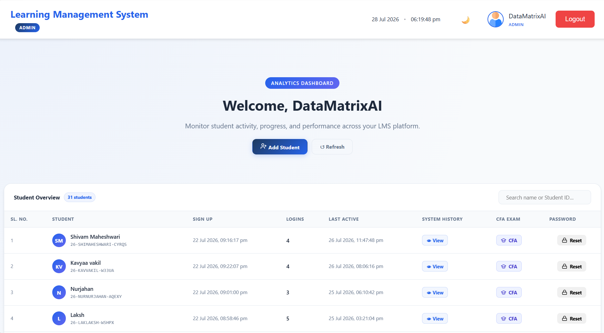
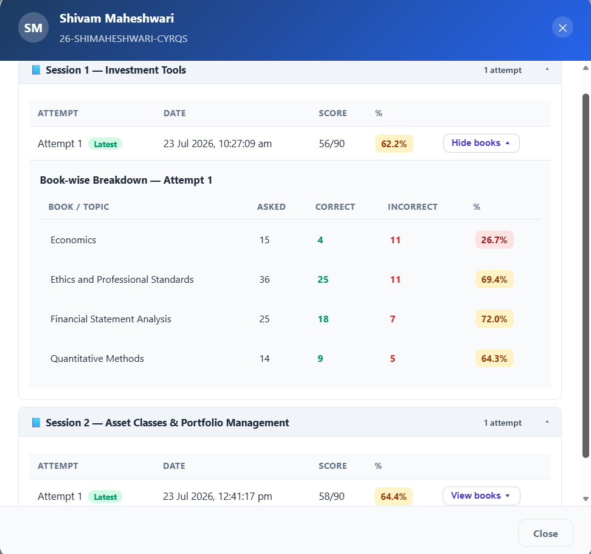
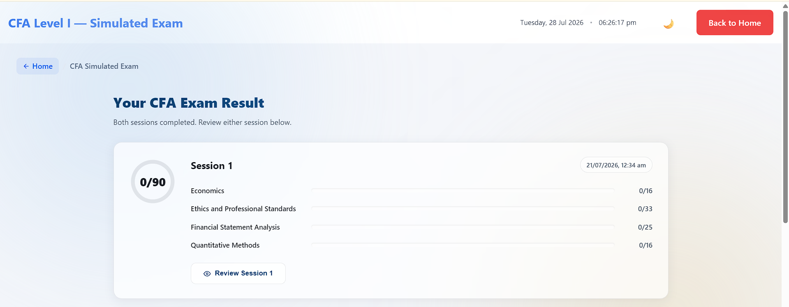
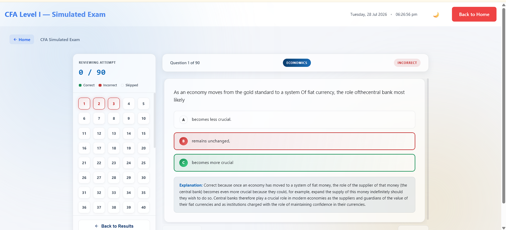

The Institutional Challenge
Executing high-stakes certification assessments like CFA Level-1 demands an infrastructure capable of enforcing strict testing blueprints, dynamic paper generation, and real-time execution stability. Traditional assessment management systems suffer from static paper repositories, memory bias from repeated items, and rigid topic weight allocations.
When preparing candidates for globally standardized examinations, academic institutions face severe friction due to manual question set assembly, inadequate distractor quality, and slow diagnostic feedback cycles, leaving educators blind to specific candidate weak points prior to official exams.
Critical Institutional Challenges
- Static Question Repository Constraints: Reusing question sets across test attempts compromises evaluation validity and creates memory bias.
- Inflexible Weight Enforcements: Inability to algorithmically enforce strict subject percentage quotas across multi-module blueprints.
- Processing & Evaluation Latency: Traditional platforms delay diagnostic report generation, missing critical intervention windows.
- Plausible Distractor Generation Gap: Inability to synthesize dynamic, Level-1 quality multiple-choice options with realistic numerical/conceptual traps.
- Lack of Real-Time Cohort Analytics: Faculty lack real-time visibility into overall candidate readiness across specific financial modules.
Traditional Assessment Workflow
Characteristics: High Memory Bias • Rigid Topic Ratios • Delayed Feedback • Limited Diagnostics
The DataMatrixAI Assessment Platform Architecture
Proven AI-Driven Examination Engine: Engineered for high-rigor professional certifications, DataMatrixAI provides an end-to-end adaptive assessment system. Powered by dynamic synthesis algorithms and real-time execution services, the platform guarantees that every generated paper meets exact blueprint constraints while eliminating item duplication.
Data Convergence into Assessment Engine
Data & Blueprint Inputs
- Official Syllabus Percentage Quotas
- Multi-Module Topic Hierarchy
- Candidate Attempt History Log
- Timed Exam Configuration Rules
Adaptive Synthesis Engine
Processes complex blueprint parameters to dynamically compile zero-overlap exam papers with instant evaluation streams.
End-to-End Exam Generation & Evaluation Workflow
Core Examination Engine Capabilities
Algorithmic Synthesis
Generates Level-1 complexity question items with mathematically designed distractors.
Zero-Overlap Engine
Enforces algorithmic non-repetition across multiple attempts for candidate tracking.
Blueprint Weight Compliance
Strictly allocates exact percentage weights for each topic as defined by official guidelines.
Exam Pattern Engine
Replicates official exam cadence, section rules, dynamic timers, and scoring formulas.
Real-Time Execution
High-concurrency platform engine ensuring zero latency during synchronized exam windows.
Competency Analytics
Delivers immediate deep-dive breakdowns across individual subject modules and concepts.
Live Deployment Session Overview
The following deployment highlight demonstrates how Christ University utilized the DataMatrixAI Assessment Engine during a live, synchronized CFA Level-1 mock assessment, delivering 100% execution stability and precise diagnostic results.
Live Examination Execution Profile (Christ University)
Execution Findings & Results
- Achieved 0% question overlap across repeat mock attempts per candidate.
- Enforced strict topic percentage weighting (Ethical Standards, FRA, Equity, Fixed Income).
- Maintained seamless high-concurrency throughput across synchronized exam start windows.
- Generated instant subject-wise competency scorecards immediately upon test submission.
- Pinpointed specific conceptual weaknesses (e.g., Deferred Tax Liability accounting) for faculty focus.
Assessment Control Center & Analytics Dashboard




Delivered Business & Institutional Impact
Before vs After Execution
| Legacy Assessment Platforms | DataMatrixAI Assessment Architecture |
|---|---|
| Static test banks with predictable question patterns | Dynamic AI paper generation with zero-overlap algorithms |
| Approximate or manual topic weighting | Algorithmic enforcement of official syllabus percentage quotas |
| Delayed evaluation processing | Instantaneous scoring & real-time competency matrix generation |
| Basic pass/fail output metrics | Deep-dive diagnostic analytics pinpointing specific topic gaps |
| Manual exam assembly overhead | Automated blueprint-compliant paper rendering in seconds |
Key Quantified Benefits
100% Blueprint Precision
Every generated exam paper perfectly matched official topic percentage quotas.
Zero Execution Downtime
100% platform stability and instant submission scoring across all live sessions.
Deep Diagnostic Clarity
Identifies micro-level learning gaps per candidate to optimize targeted faculty remediation.
Eliminated Memory Bias
Zero-overlap paper compilation ensures true knowledge testing rather than memorization.
Platform Snapshot & Deployment Summary
Deployment Overview
| Industry | Higher Education / Professional Certifications |
| Solution | Adaptive Examination & Competency Analytics Architecture |
| Platform | DataMatrixAI Knowledge & Competency Engine |
| Deployment | High-Availability Enterprise Cloud Architecture |
| Primary Users | Academic Directors, Faculty, Certification Candidates |